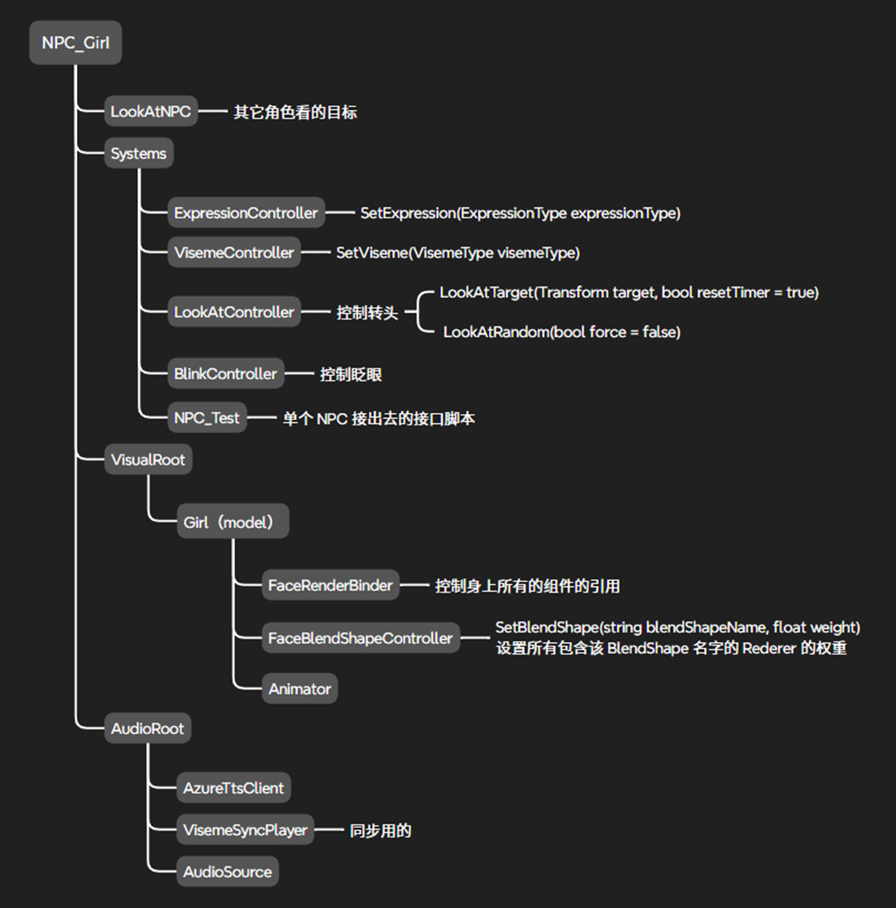

AI NPC Dual-Character System
Animating two AI characters
The conversation in action

System architecture

Animation system
How the controllers fit together
Dividing the ARKit channels
Three controllers share responsibility for the face and head.
ExpressionControllerproduces target weights for expressions.VisemeControllerproduces target weights for speech shapes, or visemes.LookAtControllercontrols bone rotation and eye direction.
Channels assigned to ExpressionController
browDownLeft / Right
browInnerUp
browOuterUpLeft / Right
cheekPuff
cheekSquintLeft / Right
eyeBlinkLeft / Right
eyeSquintLeft / Right
eyeWideLeft / Right
jawLeft / Right
mouthDimpleLeft / Right
mouthFrownLeft / Right
mouthLeft / Right
mouthShrugLower / Upper
mouthSmileLeft / Right
mouthUpperUpLeft / Right
noseSneerLeft / Right
Channels assigned to VisemeController
jawForward
jawOpen
mouthClose
mouthFunnel
mouthLowerDownLeft / Right
mouthPressLeft / Right
mouthPucker
mouthRollLower
mouthRollUpper
mouthStretchLeft / Right
These channels are managed by LookAtController rather than driven directly as independent blend shapes.
eyeLookDownLeft / Right
eyeLookInLeft / Right
eyeLookOutLeft / Right
eyeLookUpLeft / Right
eyeBlinkLeft / Right
Low-level interface
Two components apply the controllers’ output to the face.
FaceRendererBindercollects every renderer with facial blend shapes inSkinnedMeshRenderer[] result. This lets the same shape be adjusted across multiple meshes.

FaceBlendShapeControllersets individual shape weights and resets the blend shapes.
public void ResetAllBlendShapes()
public void SetBlendShape(string blendShapeName, float weight)
public void SetBlendShapeOnRenderer(SkinnedMeshRenderer smr, string blendShapeName, float weight)
Animation layers


- Walk is reserved for a future walking animation when following another character.
- UpperLayer handles gestures during speech.
- LookAt layers head motion onto the pose.
Gestures during speech
- A 2D Freeform Cartesian blend tree adds variation to the speaking gestures. It has two parameters.
- TalkStyle 0-1
- TalkIntensity 0-1
| Animation | TalkStyle | TalkIntensity |
|---|---|---|
| talk1_small | 0 | 0 |
| talk1_strong | 0 | 1 |
| talk2_small | 1 | 0 |
| talk2_strong | 1 | 1 |

- The character’s emotion determines the intensity of its gestures.
private float GetTalkDensity(EmotionType type)
{
switch (type)
{
case EmotionType.Think:
return 0.5f;
case EmotionType.Disaprove:
return 0.6f;
case EmotionType.Aprove:
return 0.2f;
case EmotionType.Angry:
return 0.8f;
case EmotionType.Sad:
return 0f;
default:
return 0f;
}
}
- For each variation, the system randomly chooses between the two talk styles.
Facial expressions
Expression Controller:
Start()
↓
ApplyExpression(currentExpression)
Update()
↓
If the expression has changed
↓
ApplyExpression(newExpression)
External call:
SetExpression(...)
↓
ApplyExpression(...)
Expression presets and their blend shape weights
Happy:
mouthSmileLeft / Right = 80
cheekSquintLeft / Right = 40
eyeSquintLeft / Right = 20
browOuterUpLeft / Right = 10
Surprise:
jawOpen = 60
eyeWideLeft / Right = 80
browInnerUp = 70
browOuterUpLeft / Right = 50
mouthFunnel = 30
Sad:
mouthFrownLeft / Right = 70
browInnerUp = 60
browDownLeft / Right = 30
eyeSquintLeft / Right = 20
jawOpen = 10
Angry:
browDownLeft / Right = 80
eyeSquintLeft / Right = 50
mouthPressLeft / Right = 60
jawForward = 20
The weights can also be adjusted by hand in the editor.

Lip movements
The viseme controller applies the current speech shape.
Start()
↓
ApplyViseme(VisemeType currentViseme)
Update()
↓
If the viseme has changed
↓
ApplyViseme(VisemeType newViseme)
External call:
SetViseme(VisemeType visemeType)
↓
ApplyViseme(VisemeType visemeType)
Viseme presets
public enum VisemeType
{
None,
Closed,
A_Open,
A_Wide,
I,
U,
O,
FV,
L,
SZ,
SHCH,
Rest
}
// Example preset for closed lips.
new VisemePreset
{
visemeType = VisemeType.Closed,
blendShapes = new List<BlendShapeValue>
{
new BlendShapeValue { shapeName = "mouthClose", value = 40f },
new BlendShapeValue { shapeName = "mouthPressLeft", value = 35f },
new BlendShapeValue { shapeName = "mouthPressRight", value = 35f },
new BlendShapeValue { shapeName = "jawOpen", value = 0f }
}
},

Blinking
BlinkController
BlinkControllerdriveseyeBlinkLeftandeyeBlinkRightthroughFaceBlendShapeController.SetBlendShape().- Each blink goes through the following states.
Update()
↓
Is it time to blink?
↓ Yes
StartBlink(): choose a random blink intensity and set _blinkState = BlinkState.Closing
↓
UpdateBlink() handles three states: idle, BlinkState.Closing, and BlinkState.Opening
↓
Closing: increase the eyelid weight from 0 to the target
↓ After a short interval, set _blinkState = BlinkState.Opening
Opening: decrease the weight from the target to 0
↓
ScheduleNextBlink()
↓
Return to Update()
Gaze and head tracking
Update()
↓
Check that the references and target are valid
↓
ComputeEyeTarget()
↓
ComputeHeadTarget()
↓
UpdateEyeLogic()
↓
UpdateHeadLogic()
Computing the targets
Eyes
Start with the target position
↓
Convert it to the local space of eyeReference
↓
Use localOffset.x for the horizontal offset
Use localOffset.y for the vertical offset
↓
Clamp the angles using eyeHorizontalLimit and eyeVerticalLimit
↓
Normalize to the range [-1, 1]
↓
Apply eyeHorizontalWeight and eyeVerticalWeight to their respective axes
↓
Subtract the current head rotation, _currentHeadX
↓
Smooth the movement with MoveTowards
↓
Write the eyeLook... blend shape weights
Head
Start with the target position
↓
Convert it to the local space of headReference
↓
Compute the horizontal angle with atan2(localOffset.x, localOffset.z)
↓
Clamp it using headHorizontalLimit
↓
Scale the response by distance
↓
Normalize to the range [-1, 1]
↓
Check whether the angle exceeds deadZone
↓
Wait for the eyes to turn partway toward the target
↓
Start turning the head to follow
↓
Smooth the turn with MoveTowards
↓
Write the Animator parameters
Applying the updates
The eyes are driven by blend shape weights.
faceController.SetBlendShape("eyeLookUpLeft", eyeLookUpLeft);
faceController.SetBlendShape("eyeLookUpRight", eyeLookUpRight);
faceController.SetBlendShape("eyeLookDownLeft", eyeLookDownLeft);
faceController.SetBlendShape("eyeLookDownRight", eyeLookDownRight);
The Animator graph handles the head movement.

Speech and conversation
Text-to-speech with Azure
Connecting Unity to the speech service
I used Microsoft Azure for speech synthesis, with a Python script running outside Unity.
Unity sends the following request.
class TtsRequest(BaseModel):
text: str
voice: str = "zh-CN-XiaoxiaoNeural"
style: Optional[str] = None
rate: str = "0%"
pitch: str = "0%"
volume: str = "0%"
request_viseme: bool = True
emotion: Optional[str] = "neutral"
The server returns a response like this.
{
"ok": true,
"audio_base64": "UklGRiQAAABXQVZF...",
"audio_format": "wav",
"sample_rate": 24000,
"channels": 1,
"duration_ms": 1234.5,
"visemes": [
{
"audio_offset_ticks": 500000,
"audio_offset_ms": 50.0,
"viseme_id": 3,
"animation": "..."
}
],
"expression": {
"primary": "neutral",
"intensity": 0.35
},
"words": []
}
Receiving the synthesized line
SpeakCoroutine(text)
↓
Initialize the playback state
_isPreparing = true
_isReadyToTalk = false
_hasPlaybackStarted = false
_hasPlaybackCompleted = false
talking = false
↓
Clear the previous audio and update the AudioSource and visemeSyncPlayer
↓
Build an AzureTtsRequest and POST it to serverUrl with UnityWebRequest
↓
yield return request.SendWebRequest() to wait for the response
↓
↓ If the request succeeds
↓
Read responseJson
Parse it with JsonUtility.FromJson<AzureTtsResponse>() and validate the response
↓
↓
Convert audio_base64 to an AudioClip
↓
Convert.FromBase64String(...) returns wavBytes
WavUtility.ToAudioClip(...) returns AudioClip clip
↓
↓
Prepare both playback tracks:
Assign the clip to the AudioSource: audioSource.clip = clip;
Load the visemes: visemeSyncPlayer.LoadTimeline(response.visemes)
↓
↓
The audio and viseme timeline are ready
_isPreparing = false
_isReadyToTalk = true
↓
Wait for talking == true: yield return new WaitUntil(() => talking)
↓
AudioSource.Play()
↓
_hasPlaybackStarted = true
_hasPlaybackCompleted = false
↓
visemeSyncPlayer.Play()
↓
_isReadyToTalk = false
↓
If resetTalkingAfterPlaybackStarts == true
talking = false
↓
Wait for audio playback to finish
yield return new WaitWhile(() => audioSource.isPlaying)
↓
_hasPlaybackCompleted = true
_speakCoroutine = null
↓
End the coroutine
Playing the synthesized line
- Convert the timing information from TTS into frames like this one.
public LipSyncFrame(float timeMs, VisemeType visemeType)
{
this.timeMs = timeMs;
this.visemeType = visemeType;
}
The player uses the audio clock to select the active viseme.
Update()
↓
Check whether playback is active
↓
Check that audioSource and visemeController are valid
↓
Check whether the audio has finished
↓
If it has finished, call Stop()
↓
Check whether the timeline is empty
↓
Read the current audio playback time
↓
Advance to the viseme frame for that time
↓
Get the target viseme
↓
If the target differs from the current viseme
↓
SetCurrentViseme(target)
↓
Update the current viseme
Keeping speech and lip movements in sync
AzureTtsClientssets up the AudioSource and VisemeSyncPlayer together.- VisemeSyncPlayer follows the AudioSource playback time.
float currentTimeMs = audioSource.time * 1000f;
VisemeType target = _timeline[_currentIndex].visemeType;
Coordinating two speakers
ConversationStreamReceiver receives the incoming dialogue.
StartReading()
↓
StartStreamConversation()
↓
ReadTalkPiece()
↓
EnqueueTalkPiece() // Queue each piece of incoming dialogue.
↓
.....
↓
CompleteReading()
↓
MarkStreamCompleted()
ConversationDirector decides who speaks, when they speak, and who listens to whom.
Identify the speaker
Identify the listener
↓
Prepare TTS for the current line
↓
Wait until TTS is ready
↓
Put the listener into the listening state and look toward the speaker
↓
Start the speaker’s line
↓
At preTriggerPercent, start preparing the next line
↓
Wait for the current line to finish
↓
End the speaker’s turn
↓
If the next line has not arrived, wait in the Thinking state